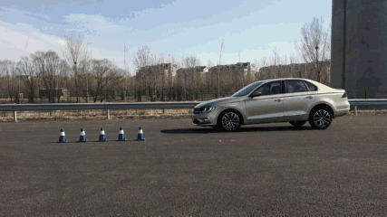

1.运动原理

运动的原理：
让某件物品沿着某种方向随着时间的变化改变位置
setInterval(function(){
obox.style.left = obox.offsetLeft+10+"px";
},30)
让页面中的obox元素的left值，每30毫秒，在自身left的基础上增加10像素
为什么是30毫秒呢？
因为电影播放每秒24帧，人眼就识别不出卡顿了，但是对于电脑来说，处理速度相对较快，需要每秒30帧以上才会显得流畅
2.边界处理
当元素的offsetLeft超出一定距离或到达一个边界值后，停止计时器
var timer;
timer = setInterval(function(){
if(obox.offsetLeft>=200){
clearInterval(timer);
}else{
obox.style.left = obox.offsetLeft+10+"px";
}
},30)
当页面中的obox元素的left值大于200的时候，停止计时器
3.重力回弹
加速效果：增加重力值，随着定时器的执行，重力增大
回弹效果：当抵达目标位置时，将速度改为负值
回弹减速：将速度改变为负值的同时，除以2减半
var obox = document.getElementById("box");
var oChild = obox.children[0];
var speed = 2; //速度
var index = 0; //计时器计数
var timer = null;
var g = 1; //重力
var left = 10; //抛物线
var maxTop = obox.offsetHeight-oChild.offsetHeight; //最大值
var maxLeft = obox.offsetWidth-oChild.offsetWidth; //最大值，抛物线
obox.onmouseover = function(){
clearInterval(timer);
timer = setInterval(function(){
index++;
if(index%5 == 0){ //每隔5次，增加重力
speed = speed + g;
}
oChild.style.top = oChild.offsetTop + speed + "px"; //设置属性
oChild.style.left = oChild.offsetLeft + left + "px"; //设置属性，抛物线
if(maxTop - oChild.offsetTop <= speed){ //距终点不足一个速度值
speed = -Math.round(speed*0.7); //回弹减速
oChild.style.top = maxTop + "px"; //强制到终点
if(Math.abs(speed) <= 1){ //速度小于1，停止运动
clearInterval(timer);
}
}
if(maxLeft-oChild.offsetLeft <= left){
left = -left;
}
if(oChild.offsetLeft <= 0){
left = -left;
}
},30)
}
5.抛物线～～～
var timer;
var obox = document.getElementById("box");
var q = 1;
var speed = 10;//速度
timer = setInterval(function(){
speed = speed*1.2; //加速效果
if(obox.offsetTop>=500){
clearInterval(timer);
}else{
obox.style.top = obox.offsetTop+speed+"px";
obox.style.left = obox.offsetLeft+30+"px"; //同时操作left的值，可实现抛物线效果
}
},30)
6.透明度的变换
1.抛物线的重力回弹
2.图片的淡入淡出
1.缓冲运动
缓冲运动

根据距离计算速度；距离和速度成正比；
速度为：(目标位置-当前位置)/10
注意：0.5px的时候会发生什么，需要向上取整，那么反方向运动呢？-0.5时向下取整
speed ＝ speed>0 ? Math.ceil(speed) : Math.floor(speed);
案例：缓冲菜单
scrollTop，传说中的流氓悬浮框
流氓悬浮框会抖
取整！
2.多元素相同属性缓冲运动函数封装
利用函数的传参
3.圆周运动
三角函数：
sin = 对边/斜边
Math.sin(Math.PI/180*reg)*r
cos = 邻边/斜边
Math.cos(Math.PI/180*reg)*r
1.侧边栏分享广告
1.缓冲运动的封装
多元素单属性运动框架的封装
运动---->边界处理---->缓冲---->单一元素同一属性缓冲---->多元素同一属性缓冲---->多元素单一不同属性缓冲----->多元素多属性缓冲--->链式
重力---->回弹---->重力回弹抛物线
圆周